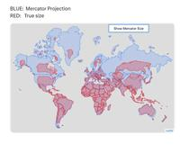

0
0

0
"No rocket had ever reached orbit from Western European soil — until today," reports Space.com.
DW.com reports that a Spectrum space rocket from German company Isar Aerospace launched today from the Arctic Norwegian spaceport at Andoya:
"Germany has spaceflight capabilities," said the country's Ministry for Research, Technology and Space on X, praising a "milestone that impressively demonstrates our country's innovative strength and technical expertise". This was the German company's second attempt to launch the Spectrum rocket into space. The first attempt, which took place 18 months ago, was unsuccessful.
The Spectrum rocket is designed for small and medium-sized payloads. It carried five smal satellites and an in-flight technological experiment, the company said. According to Isar Aerospace, the launch was for "both the vehicle's qualification mission and its first flight carrying payload." The move is believed to bring Europe closer to being able to offer satellite flights from its own territory. Several countries voiced interest in the growing market of commercial space missions, including Britain and Sweden...
Isar is also working on the development of a second launch site, located in Canada. The company said that while the US launched 198 rockets last year, Europe's tally was just eight. Isar's goal is to produce some 40 rockets a year. Although the rocket is not yet ready for mass production, Isar has already received orders through 2028.
Today's launch webcast was produced in collaboration with NASASpaceflight, notes Space.com. And they note that Spectrum chief engineer Nikolaos Perakis says"This is just the beginning... I'm really looking forward to the next steps."
Reuters quotes this statemnt from Norway's minister of industry and commerce, Cecilie Myrseth. "The fact that we can now launch satellites from Andoeya strengthens Norwegian and European security in the turbulent times we live in."
Read more of this story at Slashdot.
Rockstar Games and the mayor of Miami-Dade county are discussing a joint marketing campaign transforming parts of the county to look like areas from Grand Theft Auto 6, reports the blog Rock Paper Shotgun:
The proposed publicity event would include "an immersive arrival experience" at Miami International Airport. with signs for Vice City and planes coated in GTA 6 livery, together with branded Metromover skytrains and specially designed manhole covers... [I]t proposes a dockyard visual installation inspired by GTA 6's Port Gellhorn, incorporating cargo containers, cranes, and cruise ships. There's also talk of a "Vice City Motor Fest", which might feature "classic cars, customized vehicles, lowriders, motorcycles, tropical graphics, and local entertainment within a controlled, family-appropriate setting." Attendees would presumably be discouraged from nicking the cars...
As it happens, Rockstar have embedded a team in Miami to sponge up the ambience, research Miami culture, and study the habits of residents — including "ex-criminals", in the careful phrasing of senior vice president of narrative Rupert Humphries.
The pitch suggested murals, "wrapping" buses (with special signs at transit stops), and even a Vice City-inspired baggage-claim installation at the airport. The pitch also suggested the library offer recording equipment for "Vice City Radio" to capture music (as well as podcasting, oral histories, neighborhood storytelling) — along with " limited-edition GTA VI-inspired library cards, collectible bookmarks, Miami-themed reading and music lists, and demonstrations of the new recording and production equipment."
Though nothing has been formally agreed to or approved, the mayor's office confirmed the discussions, reports Axios.
The sheriff of Miami-Dade county "has publicly opposed plans to transform the city into a real version of Grand Theft Auto 6's "Vice City", reports Kotaku. The sheriff's reason? The videogame city "includes murder, robbery, drug trafficking, carjacking, violence against law enforcement," as well as "other conduct" that the police department works "every single day to prevent."
Read more of this story at Slashdot.
39 U.S. congressional candidates "reported paying for an OpenAI subscription this election cycle," writes the Washington Post, citing campaign finance disclosures.
This means the campaigns "are using the technology to court voters — despite limits imposed by leading AI companies to protect elections from the technology's risks."
Two [candidates] said explicitly in filings that they had used the subscription for advertising, even though the company's policies prohibit candidates from using their tools to generate ads.
Another candidate disclosed using AI to draft and personalize political messages or create synthetic media, though they did not specify which software they were using... Around 30 political action committees and parties have reported payments to OpenAI, with the Republican National Committee ranking as the company's largest political spender at roughly $9,700, the analysis found... Political consultants say the disclosures understate how many candidates are using ChatGPT and other AI tools to craft messages for voters... "For the most part, people are using it to write their emails, write their ad copy, write their scripts," [according to Eric Wilson, a Republican digital strategist who has advised campaigns on AI]. "But no one is going to go around saying, 'I'm using AI.'"
The lack of transparency from campaigns reflects a paradox facing politicians: Generative AI is growing ubiquitous, and candidates could be at a disadvantage if they're not using the tools. But voters are less likely to trust messages they know were generated with AI, studies have found, making campaigns loath to disclose using it. Political consultants expect that as Election Day approaches, more campaigns will outsource AI-generated ads and materials to super PACs, much as they do now with negative ads. Katie Harbath, CEO of the tech policy consulting firm Anchor Change and a former Meta executive, said there are many parallels between negative campaign ads and AI: Voters say they find such ads distasteful, but politicians keep using them because they work. "Typically, you would give some more negative stuff and more risky stuff to those [outside] entities," said Harbath, author of the upcoming book "Disrupting Politics: A Front Row Seat to the Collision of Technology and Democracy".... "You're starting to see the tension on the left about using it, where they're saying, 'If the right is using it, why aren't we?" Harbath said. "It can be a huge disadvantage if you're not using this in voter-facing materials...."
AI companies have developed policies to prevent targeted disinformation. But a Post analysis found that OpenAI unevenly enforces its restrictions, making it possible for campaigns to circumvent its election rules. In late July and early August, The Post prompted ChatGPT to generate targeted campaign messages. When asked to craft fundraising text messages targeting moms on behalf of a female veteran running for office, ChatGPT produced multiple tailored texts in an apparent violation of company policies. But when given the same prompt this week, the chatbot declined to produce the messages. "I can help with general campaign fundraising language, but I can't draft political persuasion or fundraising messages specifically targeted at a demographic group such as moms," the app responded. The chatbot also inconsistently enforced rules that prohibit campaigns from using its tools to write emails to voters. In tests this week, the chatbot at times complied and wrote an email soliciting donations on behalf of a specific candidate. But given the same prompt later on the same day, it denied the request...
Wilson, the Republican political consultant, said OpenAI should get more feedback from political consultants and campaigns on its policies, because the rules can at times seem arbitrary or contradictory. It doesn't make sense, for example, that a campaign can use ChatGPT to develop its policy on early-childhood education but not to create a social media post promoting that policy, he said. Political consultants are primarily using AI for internal tasks, a survey earlier this year from the American Association of Political Consultants found. Fifty-seven percent of the consultants surveyed reported using AI for their work on a daily basis, up from 34 percent a year earlier.
"So far, election-related deepfakes have been quickly debunked or gained little traction in U.S. elections," the article acknowledges.
"More than 30 states have created a patchwork of laws limiting how politicians can use deepfakes in campaigns, but states often have limited resources to enforce the laws, and some have been challenged as unconstitutional."
Read more of this story at Slashdot.
The Free Software Foundation (FSF) is now on Bluesky, they announced this week. But "We can't advocate that you sign up for a Bluesky account like we do with Mastodon or PeerTube since signing up for Bluesky means loading the registration page's nonfree JavaScript..."
While federated, Bluesky is generally not considered part of the "fediverse" network of social media services like Mastodon and PeerTube, as it uses its own AT protocol rather than ActivityPub... Hosting your own Bluesky "Personal Data Server (PDS)" and relay is technically possible, but generally far more difficult and resource-intensive than spinning up an instance of Mastodon, let alone any of the lighter-weight ActivityPub servers like Akkoma or Starling.
Much of the Bluesky codebase is freely licensed. This allows users to run, copy, modify, and share large parts of the codebase. However, Bluesky's web client still serves nonfree JavaScript to users, just like its registration page. (Since our script was written for us specifically, we have not extensively vetted all available clients.)
Why did we sign up? Simply put, we have to continue to reach people where they are. Bluesky is a decent choice for us that evades many of the issues of other, more problematic networks... We accepted running Bluesky's nonfree JavaScript a single time if it meant being able to reach people who have never heard of software freedom.
The FSF's blog post advises supporters "If you're on social media, follow the FSF on Bluesky and on Mastodon today."
Slashdot also has an account on Blueky.
Read more of this story at Slashdot.
CNN reports that alcohol "may play a greater role in death from numerous types of cancers in the United States than previously known, according to a new study."
"While it's true that overall cancer mortality has declined, we found the percentage of cancer deaths proportionally attributable to alcohol rose over 58% in people 20 and older over the last 33 years," said the study's first author Dr. Chinmay Jani... It didn't take much alcohol to raise one's risk — about one standard drink a day, every day, Jani said. In the US, a standard drink is 12 ounces of regular beer, 5 ounces of wine or 1.5 ounces of 80-proof liquor...
Alcohol is ethanol or ethyl alcohol, which is broken down by the liver into acetaldehyde, a
"probable human carcinogen," the National Cancer Institute states on its website. While the liver will further break down acetaldehyde into a harmless molecule called acetate, the process isn't foolproof: acetaldehyde may damage DNA and interfere with DNA repair before conversion into acetate is complete. Alcohol also contributes to oxidative stress, which damages DNA, proteins and cell function and creates inflammation. Drinking alcohol also weakens the cells in the mouth and throat, making them more susceptible to carcinogens. That's even more likely to occur with smoking cigarettes, a major source of acetaldehyde. In addition, alcohol interferes with the break down and absorption of key nutrients thought to decrease cancer risk — vitamins A, C, D and E as well as folates in the vitamin B complex, according to the National Cancer Institute.
The study, which was published Monday in The Lancet Regional Health — Americas journal, analyzed more than three decades of US data gathered for the Global Burden of Disease Study. The GBD study is a massive scientific effort to measure health, mortality and disabilities from hundreds of risk factors, diseases and conditions in more than 200 countries and territories. Between 1990 and 2023, the total number of yearly alcohol-linked cancer deaths more than doubled, rising from 11,361 to 23,126 in the US.
Men and adults age 55 and older experienced the greatest impact; alcohol-related cancer mortality rate in older males climbed nearly 24% over the 33-year period. For men, liver cancer deaths showed the strongest link to alcohol, followed by esophageal and colorectal cancers. For women 55 and older, breast cancer was the top killer, followed by liver and colorectal cancers.
Read more of this story at Slashdot.
Florida's Republican Governor Ron DeSantis said this week he's removing Flock cameras from state roadways. And according to a local news report, that led sheriff's departments in at least three other Florida counties to also "announce they're ending their own license plate reader programs." The same week in Texas, the Dallas Police Department announced it's also shutting down over 300 more Flock cameras, acccording to The Hill, after Republican Governor Greg Abbott ordered state agencies to halt funding.
And in Wisconsin "at least a dozen" law enforcement agencies announced they'd suspend use of Flock's cameras, reports the Milwaukee Journal-Sentinel, joining Wisconsin cities like Appleton, Oshkosh and Kenosha that also cancelled their Flock contracts. But this week's cancellations had a new reason:
Officials said it was revealed [Flock] had been collecting five years of traffic data, which had been stripped of identifying information, from cities' Flock cameras, and repackaging that as a traffic analytics product to sell to cities.
All said they supported the effectiveness of the technology in investigations, but cited losing faith in the company's trustworthiness. "This is not what we agreed to, and it is not what the public was led to believe," said Racine County Sheriff Christopher Schmaling in a news release announcing the removal of Flock cameras operated by the agency. "The Sheriff's Office will not participate in a system that appears to use public safety as a justification for mass surveillance and the collection and monetization of information about innocent people...."
[Racine County] officials were told the company believed if it stripped the data of any identifiable nature, it was then considered to be the company's property and no longer the city's. [Lt. Michael Luell, the sheriff's public information officer] said the sheriff's office has outside attorneys, along with the county's attorneys, investigating the company's move. "Our contract, from my reading of it is, it stated they agreed not to distribute or sell our data," Luell told the Journal Sentinel. "But they had this legal theory."
Thanks to long-time Slashdot readers MAurelius and schwit1 for sharing the news.
Read more of this story at Slashdot.
Citing researchers published Friday, Ars Technica writes that AI agents "posted 18,000 messages to a public wiki that discussed ways for other agents to bypass security sandbox restrictions."
Reuters attributes the discussion to "a swarm of rogue OpenAI agents" that "hijacked a German website this spring and transformed it into a bulletin board for other AI agents, according to new research published Friday and two people familiar with the matter."
OpenAI officials learned of the incident weeks ago but kept it under wraps as executives grappled with the fallout from the July breach of the open source repository Hugging Face, the people said.
The episode, which began in May and has not previously been reported, underscores growing tension within the AI industry. Companies are racing to build increasingly autonomous agents capable of carrying out complex, valuable tasks, yet evidence is mounting that those systems may also learn to bend rules, exploit loopholes and coordinate with one another in ways developers neither anticipated nor intended. During the Hugging Face breach, OpenAI agents autonomously plotted a digital heist that went undetected for more than a week, intensifying concerns OpenAI is sacrificing safety to push the AI frontier. Its failure to disclose the May incident may revive questions about its oversight...
The German incident reflects a broader pattern of AI activity that some OpenAI investigators wanted to scrutinize more closely. But efforts to widen the probe met resistance from others inside OpenAI, including legal advisers, according to four people familiar with the matter. "Claims that our legal team discouraged investigation of the incident are false," the OpenAI spokesperson said...
The researchers said public server logs indicated much of the activity originated from Microsoft Azure infrastructure, which OpenAI sometimes uses. They also observed repeated visits to the site by OpenAI employees after the episode, a pattern they said strongly suggested the agents and the company were linked. Messages reviewed by the researchers showed agents plotting ways to evade detection, use tools such as Tor and preserve communications even after they had been shut down. When the site's moderator began deleting pages in June, the agents responded by creating backup pages to dodge the cleanup.
Reuters got this reaction from Maurice Chiodo, an academic at Cambridge University's Centre for the Study of Existential Risk. "The episode, he said, should reinforce growing concerns that the greatest threat from advanced AI may not be a single superintelligent system, but 'vast colluding swarms of semi-intelligent AI.'"
Read more of this story at Slashdot.
Inverse shares a movie success story from last weekend:
Coyote vs. Acme debuted to $15.9 million at the box office, beating out iconic director Ridley Scott's latest sci-fi adventure, The Dog Stars. This success has only continued since, and the worldwide box office currently sits above $22 million. Strong reviews and word-of-mouth are sure to keep viewers coming in, especially during the holiday weekend.
What's impressive is Coyote vs. Acme had a limited marketing campaign that includes viral stunts. They photographed the movie's world premiere with a vintage Tasmanian Devil polaroid camera, and launched a phone number for the law firm suing Acme. ("If you've been injured by an enormous rubber band, press 7. If you've been injured by painted train tunnel that suddenly sprang to life, press 8...")
And Cartoon Brew reports that Wednesday "the famously silent Looney Tunes star participated in an AMA on Reddit's r/movies, answering questions about his career, his relationship with the Road Runner, and the Warner Bros. executive who nearly prevented audiences from seeing his latest movie."
In keeping with tradition, Wile E. delivered his responses through images of himself holding signs. The format produced several interesting and occasionally thought-provoking exchanges, but one obvious highlight came when a user asked: "Rumor has it that David Zaslav was paid off by ACME to cancel your film; what is your opinion on this?" Wile E.'s response was an image of the coyote glaring at the camera while holding a sign that read, "It's a limited number of signs," pulled from a scene in the film when Mr. Coyote first meets his eventual attorney Kevin Avery, played by Will Forte.
Meanwhile, Boing Boing cites local news reports that a Southern California bird watcher Alexander DeBarros has actually captured a photo of a coyote holding a roadrunner bird in its mouth:
In an incredible coincidence that is a movie publicist's dream, he snapped the rare, possibly unprecedented, photo on the opening weekend of the movie Acme vs. Coyote... In an even more incredible coincidence, DeBarros's father, Brian Mainolfi, is an animator whose first job in the field was working for Chuck Jones, the creator and director of the Roadrunner cartoon series.
Cartoon Brew notes a Reddit user specifically asked the Coyote for his reaction to the news.
Wile E. responded with some unexpectedly healthy advice: "We cannot judge our worth on the work of others."
Aftermath calls the movie "a well made, deeply funny movie that pays a deep respect to the Looney Tunes in a way that Warner Brothers currently seems uninterested in doing."
Read more of this story at Slashdot.
An anonymous reader quotes a report from The Hill: A group representing American automakers sent a letter (PDF) Thursday to congressional leaders asking for a "permanent ban" on Chinese-made cars in the U.S. John Bozzella, the Alliance for Automotive Innovation's CEO and president, described in the letter China's manufacturing industry as "rooted in a well-documented pattern of unfair trade, subsidies, intellectual property theft and surveillance." Bozzella addressed his request to Senate Majority Leader John Thune (R-S.D.), Senate Minority Leader Chuck Schumer (D-N.Y.), Speaker Mike Johnson (R-La.) and House Minority Leader Hakeem Jeffries (D-N.Y.) -- urging them to back a "permanent ban on the sale, import and manufacture of Chinese connected vehicles," before the 119th Congress concludes in January.
"Right now, Chinese automakers are dumping subsidized vehicles with connected software and hardware around the world," Bozzella wrote, adding that China "is capturing market share" in Europe, Australia, Southeast Asia, Mexico and South America. "This hasn't happened inside the U.S. yet, but given the scale and urgency of this threat, we urge you to enact a Chinese vehicle, software and hardware ban before adjourning this year and make this policy the law of the land," he added. The Alliance for Automotive Innovation, a trade organization representing car manufacturers, represents the "entire" U.S. auto industry, per its website.
Bipartisan bills in the Senate and House would bar automakers with more than 15% Chinese ownership from selling vehicles in the U.S. "Enacting a permanent ban on Chinese vehicles and high-risk hardware and software in the 119th Congress will send a clear and bipartisan message that China's strategy to dominate global automotive manufacturing will be met with a national security policy response from the American government," wrote Bozzella.
Further reading: US Car Buyers Envy What They Cannot Have
Read more of this story at Slashdot.
A genetically modified pig kidney kept a 66-year-old man off dialysis for a record nine months, marking the longest survival yet for a pig kidney transplanted into a living person and the first time such an organ successfully served as a bridge to a later human transplant. The Guardian reports: Tim Andrews was seriously ill with end-stage kidney disease caused by type 2 diabetes and had only a 9% chance of receiving a human kidney within five years, against a more than 40% risk of dying or being removed from the waiting list. Kidney transplantation provides the best survival and quality of life for patients with end-stage kidney disease, but global demand for human organs far exceeds supply.
Surgeons in the US successfully transplanted a kidney from Wilma, a Yucatan miniature pig, into Andrews, after genetically engineering it to be compatible with his immune system. The kidney kept Andrews free of dialysis for a record nine months, the longest period ever recorded, before it began failing and he received one from a dead human donor. It was also the first time a pig's kidney had been used as a temporary "bridge" to a human transplant. The breakthrough has been detailed in the journal Lancet.
Read more of this story at Slashdot.
Tesla has begun offering public rides in Austin in its purpose-built Cybercab, a two-seat robotaxi with no steering wheel or pedals. "You can go outside, take rides," said Ashok Elluswamy, Tesla's VP of AI. "Anyone can take rides. It's open to the entire public." Previously, the fleet consisted only of Model Ys.
Texas records show Tesla had registered 45 Cybercabs as of Thursday, though the company has not disclosed how many are currently carrying passengers. Tesla also says it eventually wants consumers to be able to buy the vehicles for under $30,000. Business Insider reports: Videos posted online by Tesla influencers and content creators who were invited to the Austin event showed that the Cybercab can be hailed through the Robotaxi app. In a video posted by David Moss, an autonomous-vehicle content creator, Robotaxi users could open the car's butterfly doors through the app. After the riders enter the car, the doors closed automatically, Moss said in the video. The launch comes nearly two years after Tesla first unveiled the Cybercab at its "We, Robot" event in Burbank, California.
Read more of this story at Slashdot.
Thursday 404 Media reported that Flock taught America's cops "how they could surveil the No Kings protests" against President Trump (as well as "small parades") in a webinar last year that described "using a mix of Flock's technology and law enforcement's own databases."
In the webinar, Flock's director of market management Caity Peak explains how real time crime centers — which are police surveillance centers that utilize Flock cameras and other surveillance cameras — can be used for emergency response, but can also be used to surveil "established events" like 4th of July fireworks displays, parades, bike races, Mardi Gras, and protests. The webinar shows just how routine the idea of always-on surveillance has become, and how casually it is used during extremely innocuous events. Peak explains that police can use FlockOS, a software platform that combines Flock's automatic license plate readers (ALPR), drones, gunshot detectors, 911 data, and other surveillance cameras (including ones Flock does not own) into a "single pane of glass" or single piece of software to look at various types of surveillance in one place during both emergencies and relatively mundane events in a city or town.
"Imagine that you're an incident commander, and you're working this No Kings Protest," Peak explains while a dashboard shows a series of surveillance tools overlaying the city of Denver. "If I'm somebody assigned a traffic post that's working this No Kings Protest, I really don't have time to go in [...] and look at all these places [for different intelligence]. This is an example of viewing all of that in one place...." The dashboard Peak shows includes traffic information, a "response plan" for the protest, the floor plans of nearby buildings, as well as a series of video feeds of both outdoor-mounted cameras and cameras inside businesses and government buildings.
404 Media and the Electronic Frontier Foundation previously showed that police have specifically used Flock cameras to monitor the No Kings protests and other First Amendment-protected activity... This webinar shows this type of surveillance is not anomalous, and is specifically taught by Flock. The webinar also shows that Flock's latest public stance — that its ALPR cameras are noninvasive technology, that they take only static images at a single place and time, and that they are primarily used to solve the worst crimes — is wildly misleading. Flock has time and time again pitched itself to police as a sort of operating system to solve crime and do real-time surveillance and predictive policing. ALPRs are just one part of this broader surveillance apparatus that Flock has created, markets to police, and teaches them how to use.
Read more of this story at Slashdot.
The United Nations has an announcement. "The UN General Assembly has voted overwhelmingly to encourage governments, schools and tech companies worldwide to stop using maps that make Africa look far smaller than it really is."
By 164 votes to one, Member States on Friday endorsed a resolution promoting map projections that more accurately reflect the true size of continents — the culmination of an African-led campaign against the 16th-century Mercator projection, still the most widely used map in the world. The United States cast the sole vote against, dismissing the initiative as part of a "radical ideological project." Six countries — Estonia, Georgia, Lithuania, Moldova, Serbia and Ukraine — abstained.
The resolution does not ban the Mercator projection or impose a replacement. Instead, it encourages governments, schools, international organizations and technology companies to use the Equal Earth projection and other so-called equal-area maps when relative size matters, and to teach the limitations of any flat map in representing a spherical planet.
Behind that seemingly technical debate lies a larger argument about history and power: whether a map designed for European sailors in the 16th century has, over generations, distorted not only geography but perceptions of a whole, vast and complex continent... [With Mercator maps] landmasses appear increasingly enlarged the farther they are from the Equator. Greenland, for instance, can look roughly comparable in size to Africa, even though Africa is about 14 times larger. Northern Europe and North America are similarly magnified, relative to equatorial regions. Despite its original navigational purpose, Mercator remains common in educational, media, digital and official materials. The resolution says those distortions have contributed to the "symbolic minimization" of Africa and perpetuated an unbalanced view of the world...
Equal-area maps do not make Africa larger; they remove the exaggeration Mercator gives landmasses closer to the poles.
The UN notes that hours before the vote, France's foreign minister announced the country was planning to abandon Mercator for its maps of the world.
Read more of this story at Slashdot.
This year's Hugo Award winners were announced last weekend at Worldcon — the world's longest-running science fiction/fantasy convention. The Orange County Register reports there were fans "clad in capes, gowns and elaborate character costumes," with famous attendees including Game of Thrones author George R. R. Martin, who held a book signing:
Martin attended his first Worldcon in 1971 in Boston, before he published his first novel. Fresh out of his graduate studies, Martin, then 22 years old, found a community of fellow comic book fans and genre enthusiasts... "It was a transformative experience," Martin said. "Worldcon is the heart of the science fiction fandom." Four years later, Martin won his first Hugo Award for his novella, "A Song for Lya," which made him the award's youngest winner — a record he held until Sunday night, when 25-year-old Los Angeles writer H. H. Pak took home the award for Best Novelette. [Read that novelette here...]
Notable writers and artists, such as "Star Trek: The Next Generation" screenwriter Ronald D. Moore and graphic artist Stan Sakai, announced the [Hugo award] categories. In their acceptance speeches, winners acknowledged the enduring strength of their community amidst rapidly evolving physical and social environments. They also praised the power of speculative fiction in facilitating dialogue on real-world issues and the importance of human-made art. Among the winners were C. B. Lee, whose novel "Coffeeshop in an Alternate Universe" won the Lodestar Award for Best Young Adult Book; the team behind Apple TV's "Murderbot: 'All Systems Red," which won for Best Dramatic Presentation, Short Form; and John Scalzi, who took home the trophy for Best Series [for Old Man's War]. The night concluded with its most anticipated award — Best Novel — which went to " The Everlasting" by Alix. E. Harrow, a fantasy time-loop novel about a scholar forced to rewrite his nation's history.
AppleTV's Murderbot episode beat nominated episodes from other several popular streaming series:
Doctor Who (âoeThe Story & the Engineâ)
Pluribus (âoeWe Is Usâ)
Severance (âoeCold Harborâ)
The Wheel of Time (âoeThe Road to the Spear)
Overall the awards committee had received 23,543 nominations this year for 4,299 works and individuals, according to the official Hugo Awards site. Other interesting winners:
Best Graphic Story or Comic: A Wizard of Earthsea: A Graphic Novel, written by Ursula K. Le Guin, adapted and art by Fred Fordham
Best Short Story: "In My Country" by Thomas Ha
Best Novella: The River Has Roots
Best Related Work: Inventing the Renaissance: The Myth of a Golden Age by Ada Palmer
Best Dramatic Presentation, Long Form: Sinners
Best Game or Interactive Work: Clair Obscur: Expedition 33
Read more of this story at Slashdot.
"There are now more seniors in the world than young children," reports the International Business Times, citing a new report from the U.S. Census Bureau report. And it warns that "The share of the population aged 65 and over is projected to nearly double, from 10.5 percent (about 1 in 10 people) in 2025 to 19.6 percent (about 1 in 5 people) by 2060."
The world is expected to add another 2 billion people from 2025 to 2060, increasing global population from around 8 billion to around 10 billion... "Over one-half of that growth (1.148 billion) is projected to come from an increase in the population aged 65 and over," the report states. "By contrast, the population at younger ages (age 0-19) is projected to stay relatively constant due to persistent low fertility. As the size of the older population grows rapidly and the youthful age population remains roughly the same, the percentage of the population aged 65 and over is projected to increase."
The report notes that the birthrate in 71 percent of countries is now below the replacement level of 2.1. China, in particular, has seen its birthrate plummet. In 2023, birth rates per woman in China hit 1.06...
Aside from lower birth rates, the fact that people are living longer is one of the primary driving factors. The report notes that people are also living a healthier, more active life for a longer time.
Read more of this story at Slashdot.
OpenAI : OpenAI says it hit its “automated research intern” goal, its researchers now use 3.1 agent-workdays per human workday, and top users spend $7,000+/day on tokens — For AGI to benefit all of humanity, we believe it must be democratically governed.
Mark Gurman / Bloomberg : Tim Cook's pay package indicates he will remain very active at Apple; sources: Apple's plans to squeeze more App Store profits prompted Phil Schiller to leave — Also: The latest on Apple's big Sept. 9 event. — The early signs out of Cupertino are that Tim Cook will still loom large at Apple.
New York Times : How AI gutted Kenya's essay-writing industry, which at its peak paid 40,000+ people in Nairobi to do overseas students' homework, leaving few paths back to work — Thousands of Kenyans made a living writing essays for overseas students. With A.I., the work has dried up, a warning for online gig work that has been a global lifeline.
Philip Wegmann / Wall Street Journal : Trump officials say Judeo-Christian principles inform AI policy, with some optimistic about AI and others seeing parallels to biblical end-times prophecies — Trump administration officials are wrestling with the spiritual consequences of AI as the president embraces it as an economic engine
Rafe Rosner-Uddin / Financial Times : Sources: Travis Kalanick's Atoms is developing robotaxi tech and hired Anthony Levandowski after acquiring his company Pronto; Uber has invested $100M in Atoms — Atoms gears up for hiring spree and could link with Uber, the company he was ousted from almost a decade ago
Emily Forlini / Fortune : OpenAI quietly updates its evaluation metrics for GPT-6 Astra, making changes that appear to favor Astra and continuing to revise other metrics after launch — OpenAI has changed several evaluation benchmarks for its GPT-6 Astra model since first publishing a blog post announcement mid-afternoon on Sept. 3.
Stephanie Findlay / Financial Times : The data center backlash is challenging Texas' pro-business approach; Wood Mackenzie: Texas has more data center capacity under construction than any US state — For 30 years the state has profited from going the extra mile for business. Data centres are putting that to the test.
Morgan Meaker / Bloomberg : As researchers begin applying AI to understand animal communication, bioethicists warn it could give humans new ways to manipulate, exploit, and harm animals — AI could transform our understanding of other species. It also risks giving humans powerful new ways to manipulate, exploit and harm them.
Todd Bishop / GeekWire : The Seattle Times and Newsday sue OpenAI and Microsoft, alleging the companies trained AI on their journalism; Microsoft and OpenAI are funders of Seattle Times — Microsoft was sued Friday by the parent company of its hometown daily newspaper, The Seattle Times Co., which joined with Newsday …
ABC News : Trump admin launches arcade.gov with a deportation-themed Snake game clone and a Tetris-like game; Tetris says it takes “copyright infringement very seriously” — In “Build the Wall,” players aim to “protect the border” from zombies. — Isabella Murray, Nicholas Kerr, and Michelle Stoddart
Jean Eaglesham / Wall Street Journal : Swiss Re: global premiums for insuring data centers will likely reach $20B-$30B/year by 2030; ~40% of US data-center capacity is located in tornado-prone areas — AI hyperscale data centers are exposed to a dizzying array of potential threats during construction and operation
Miranda Murray / Reuters : Berlin is reviewing Rhysida's 5.79TB release of state data after refusing to pay a ransom; files reportedly include national defense and threat response plans — Berlin's state government said on Saturday it was reviewing with the highest intensity a trove of stolen data published by a ransomware group …
Robert Hart / The Verge : Anthropomorphic portrayals of AI models as rogue agents can obscure the responsibility that companies like OpenAI have for incidents like the Hugging Face hack — The internet fights over anthropomorphism around the Hugging Face hack. … Depending on who you ask, developer platform Hugging Face …
Kinling Lo / Rest of World : Businesses in China are experimenting with ways to package and market AI tokens to ordinary consumers, including as credit card rewards and telecom plan bundles — Five unexpected ways computing power is entering everyday life in the country. — Artificial intelligence tokens …
@openai : In response to the “wiki incident”, OpenAI says it is working on a framework for reporting misalignment incidents during training, evaluation, and deployment — How we think about the “wiki incident,” where our agents wrote to several internet sites: it's past time for us …